Kuji
Kuji · Iwate
Kuji
Highlighted on the Iwate map.
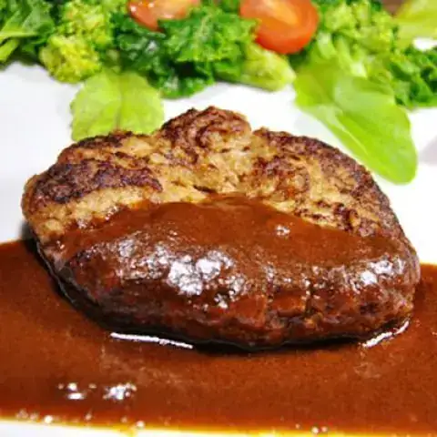
Stay
久慈グランドホテル
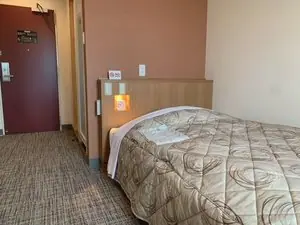
Kuji Gurandohoteru
Hotel in Kuji, Iwate.
新山根温泉べっぴんの湯
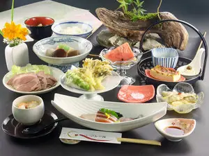
Shinzan Ne Onsen Beppinno Yu
Onsen lodging in Kuji, Iwate.
平庭山荘
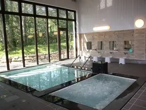
Hiraniwa Sansou
Lodge in Kuji, Iwate.
Dining
津軽煮干中華蕎麦 サムライブギー
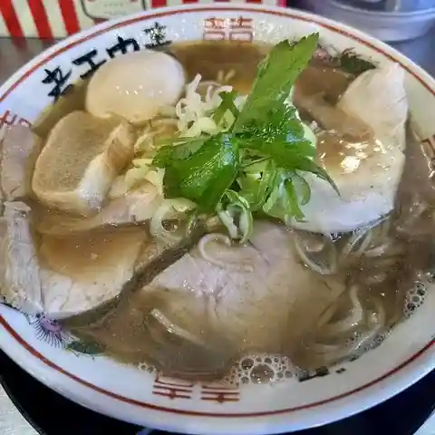
Tsugaru Niboshi Chuuka Soba Samuraibugii
Ramen shop in Kuji, Iwate.
千草
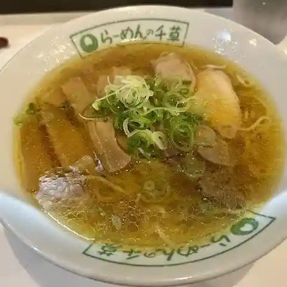
Chigusa
Ramen shop in Kuji, Iwate.
三陸リアス亭
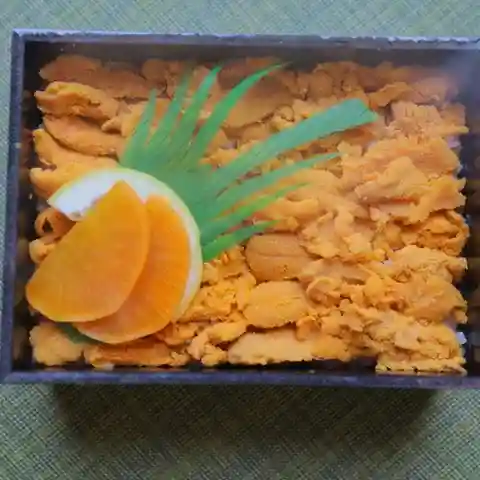
Sanriku Riasu Tei
Soba restaurant in Kuji, Iwate.
モカ
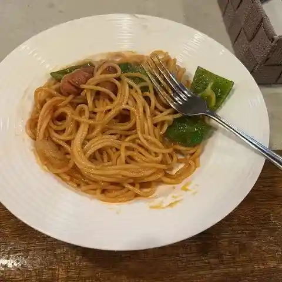
Moka
Coffee shop in Kuji, Iwate.
山海里
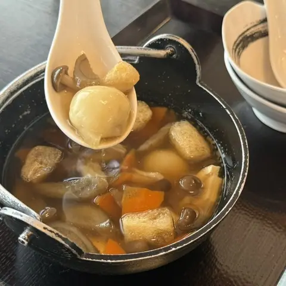
Sankai Sato
Seafood restaurant in Kuji, Iwate.
小袖海女センター
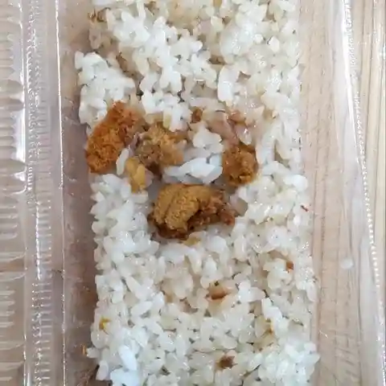
Kosode Ama Sentaa
Seafood restaurant in Kuji, Iwate.
喜多八食堂
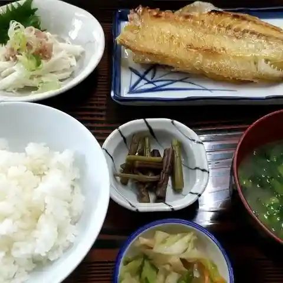
Kitahachi Shokudou
Seafood restaurant in Kuji, Iwate.
寿々喜
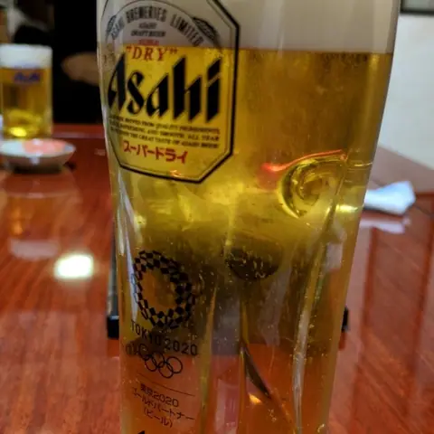
Hisashi (Kurikaesi) Ki
Seafood restaurant in Kuji, Iwate.
宇部煎餅店
Ube Senbei Mise
Japanese sweets shop in Kuji, Iwate.
とんかつ 小龍
Tonkatsu Shaoron
Tonkatsu restaurant in Kuji, Iwate.
道の駅 いわて北三陸
Michi No Eki Iwate Kita Sanriku
Roadside-station eatery in Kuji, Iwate.
おおみ屋
Oomi Ya
Shokudo diner in Kuji, Iwate.
お菓子の沢菊 本店
O Kashi No Sawagiku Honten
Cake shop in Kuji, Iwate.
秋田比内や 久慈店
Akita Hinai Ya Kuji Mise
Chicken restaurant in Kuji, Iwate.
道の駅くじ やませ土風館
Michi No Eki Kuji Yamase Tsuchi Kaze Kan
Roadside-station eatery in Kuji, Iwate.
鮨処 きよ田
Sushi Tokoro Kiyo Ta
Sushi restaurant in Kuji, Iwate.
NANAMARUNI COFFEE
Nanamaruni Coffee
Café in Kuji, Iwate.
琥珀の森レストラン くんのこ
Kohaku No Mori Resutoran Kunnoko
Dining bar in Kuji, Iwate.
弥次喜多
Yaji Kita
Seafood restaurant in Kuji, Iwate.
康海庵
Yasushi Umi Iori
Soba restaurant in Kuji, Iwate.
standonuts
Standonuts
Doughnut shop in Kuji, Iwate.
蛇の目寿司
Hebi No Me Sushi
Sushi restaurant in Kuji, Iwate.
アゼリア
Azeria
Chinese restaurant in Kuji, Iwate.
Sights
Kita-Samuraihama Campground
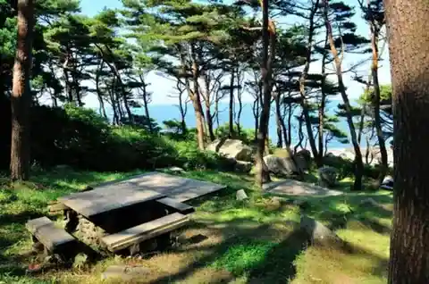
This campground overlooks the Pacific Ocean and is rich in nature.
Mamebu
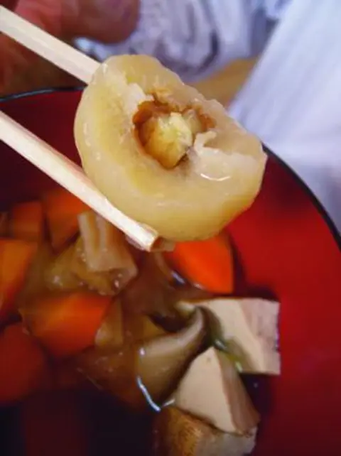
Mamebu is made by mixing flour with a little salt, kneading it with water, dividing it into thumb-sized pieces, adding walnuts and brown sugar, and shaping it into balls to prevent the filling from falling out.
Heromachi Farm-Direct Hall
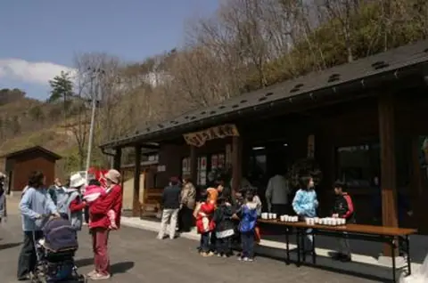
Direct-from-the-farm facility “Heromachi Direct-to-Farm Center”
Tantankan
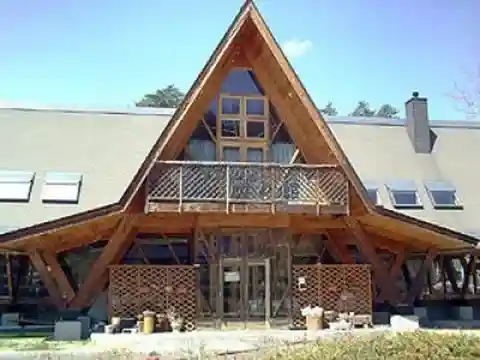
A restaurant where you can feel the warmth of wood in the image of a mountain hut.
Yama no Kibudo (Wild Grapes)
A natural straight drink made from 100% wild grape juice harvested from the naturally rich forests of northern Tohoku.
Busunokobu (Local Sweet)
Once you hear it, you will never forget its strong name, "Busu no Kobu", which has been eaten as a famous confectionery in Iwate since ancient times.
Sankairi Local Ingredients Restaurant
Roadside Station "Kuji" Yamase Dofukan is an information base where you can find everything about sightseeing and local products in Kuji City.
Handmade Soba Oni wa Uchi
A handmade soba shop in Kuji City. We use 100% domestic buckwheat flour.
Roadside Station Iwate Kita-Sanriku
The roadside station "Iwate Kita-Sanriku" opened in April 2023 as an exchange base facility that connects the "sea, mountains, village, and people" of Kita-Sanriku.
Abe Senbei Shop
A long-established Nanbu rice cracker shop in Kuji City. We are particular about quality and carefully bake each piece with sincerity.
Ama no Isojiru and Ichigo-ni Soup
Sea diver soup and stew with strawberries
Wild Grape Cheesecake
A light and melt-in-your-mouth rare cheesecake paired with a sauce made from wild grapes harvested in the Kuji region.
Funato Beach
Among Kuji's coastline, which is bordered by rocky reefs, Funato Beach is a precious beach with gentle waves that extend for about 100 meters.
Fukurai
It was named "Fukurai," a sake that brings happiness, so that it brings good fortune to everyone, including those who drink it, those who sell it, and those who make it.
Bistro Kunnoko
We are particular about using local ingredients such as Tankaku beef and Sasuke pork.
Hiraniwa Kogen Park Golf Course
You will move around on the green grass using a special club and ball.
Black Bean Cake
A pound cake made with plenty of carefully selected black beans from Iwate Prefecture.
Heromachi Farm-Direct Hall
Direct-from-the-farm facility Heromachi Farm-Direct Hall
Samuraihama Seawater Pool
A seawater pool carved out of a rocky area adjacent to the Kitasamurahama Campsite.
Sasaki Senbei Shop
A long-established Nanbu rice cracker shop in Kuji City.
Kuji Underground Aquarium Science Museum Mogranpia
Kuji Underground Aquarium Science Museum Mogranpia
Kuji Information Exchange Center YOMUNOSU
Opened in July 2020, this complex combines a tourist information center and library in one building.
Kuji Citizens Market
Kuji Citizen's Kitchen is lined with 24 stores, including fresh fish stores, dry goods stores, vegetable and greengrocer stores, meat stores, and general food stores.
Hiraniwa Kogen
The vast Hiraniwa Plateau, located 800 meters above sea level, is a scenic place designated as a prefectural natural park.